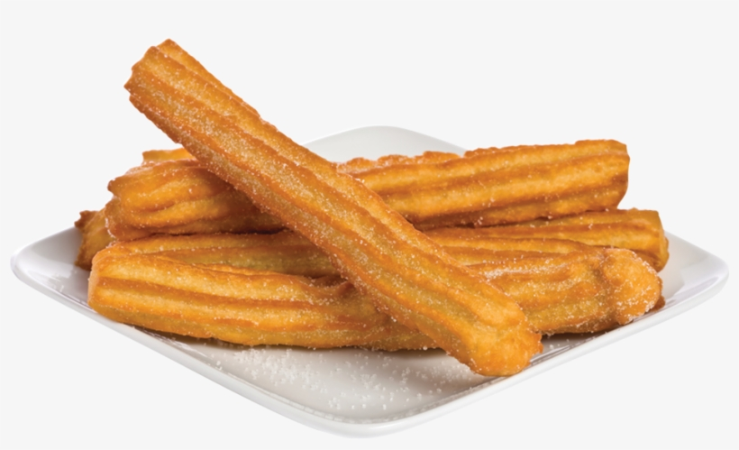

Churros

Spanish crullers.
A churro is a type of fried dough from Spanish and Portuguese cuisine, made with choux pastry dough piped into hot oil with a piping bag and large closed star tip or similar shape.
Ingredients
- 2 quarts vegetable oil for frying
- 1 cup water
- ½ cup margarine
- 1 cup all-purpose flour
- ¼ teaspoon salt
- 3 eggs
- ¼ cup white sugar
- ¼ teaspoon ground cinnamon
Steps
-
Step 1
In a heavy deep skillet or deep-fryer, heat oil to 360 degrees F (180 degrees C). Oil should be about 1 1/2 inches deep.
-
Step 2
In a medium saucepan, heat water and margarine to a rolling boil. Combine the flour and salt; stir into the boiling mixture. Reduce heat to low and stir vigorously until the mixture forms a ball, about 1 minute. Remove from heat and beat in the eggs one at a time. Spoon the mixture into a pastry bag fitted with a large star tip.
-
Sted 3
Carefully squeeze out 4 inch long strips of dough directly into the hot oil. Fry 3 or 4 strips at once, until golden brown, about 2 minutes on each side. Remove from hot oil to drain on paper towels. Stir together the sugar and cinnamon; roll churros in the mixture while still hot.